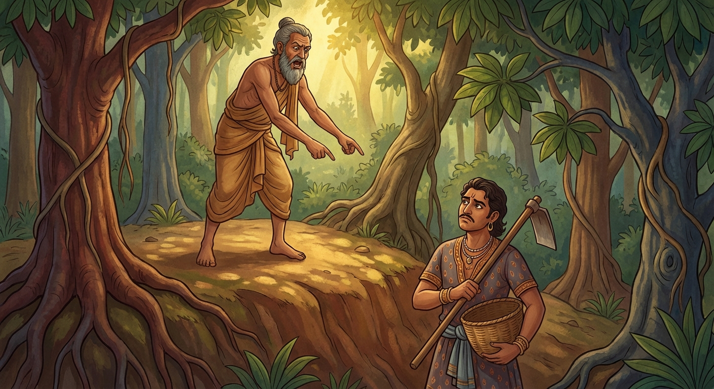

9. නන්ද ජාතකය (39)
“මඤ්ඤෙ සොවණ්ණයො රාසී” යන මේ ගාථා පාඨය බුදුරජාණන් වහන්සේ ජේතවනාරාමයෙහි වැඩවසන කල්හි, සැරියුත් මහා තෙරුන් වහන්සේගේ එකට වසන (සද්ධිවිහාරික) භික්ෂුවක් අරබයා වදාළ සේක. ඒ භික්ෂුව මනා කීකරු ගුණ ඇත්තෙක් විය. කියන දේ ඉවසන්නේය. තෙරුන් වහන්සේට මහත් උත්සාහයෙන් උපකාර කරයි. ඉක්බිති එක් කලෙක තෙරුන් වහන්සේ බුදුරජාණන් වහන්සේගෙන් අවසර ගෙන චාරිකාවේ හැසිරෙන්නේ දක්ෂිණාගිරි ජනපදයට වැඩම කළ සේක. ඒ භික්ෂුව එහි ගිය කල්හි මානයෙන් උදම් වූයේ තෙරුන් වහන්සේගේ වචනය නොපිළිපදියි. “ඇවැත්නි, මෙය කරව” යි කී කල්හි තෙරුන් වහන්සේට ප්රතිපක්ෂව (විරුද්ධව) සිටියි. තෙරුන් වහන්සේ ඔහුගේ අදහස නොදනිති. උන්වහන්සේ එහි චාරිකාවේ හැසිර නැවත ජේතවනයට වැඩම කළහ. ඒ භික්ෂුව තෙරුන් වහන්සේ ජේතවන විහාරයට පැමිණි කල්හි නැවතත් පෙර පරිදිම කීකරු විය. තෙරුන් වහන්සේ මේ බව තථාගතයන් වහන්සේට දැන්වූහ. “ස්වාමීනි, මගේ එක් සද්ධිවිහාරික භික්ෂුවක් එක් තැනකදී සියයක් දී ගත් දාසයකු මෙන් කීකරු වෙයි. තවත් තැනකදී මානයෙන් උදම් වී ‘මෙය කරව’ යි කී කල්හි විරුද්ධවාදියෙකු වෙයි” යනුවෙනි. ශාස්තෲන් වහන්සේ “සාරිපුත්රය, මේ භික්ෂුව දැන් පමණක් නොව පෙරත් එක් තැනක ගිය විට සියයකට ගත් දාසයකු මෙන් වෙයි. තවත් තැනකට ගිය විට ප්රතිපක්ෂ සතුරෙකු වෙයි” යැයි වදාරා තෙරුන් විසින් අයදින ලදුව අතීත කථාව ගෙනහැර දැක්වූහ.
අතීතයෙහි බරණැස් නුවර බ්රහ්මදත්ත රජු රාජ්ය කරන කල්හි බෝධිසත්ත්වයෝ එක්තරා කෙළෙඹි (ධනවත් ගෘහපති) කුලයක පිළිසිඳ ගත්හ. ඒ බෝධිසත්ත්වයන්ට මිත්ර වූ කෙළෙඹියෙක් ද සිටියේය. ඔහු මහලුය. එහෙත් ඔහුගේ බිරිඳ තරුණය. ඇය ඔහු නිසා පුතකු ලැබුවාය. කෙළෙඹියා මෙසේ සිතීය: “මේ ස්ත්රිය තරුණ හෙයින් මාගේ ඇවෑමෙන් යම්කිසි පුරුෂයකු ගෙන මේ ධනය විනාශ කරන්නීය. මගේ පුතාට නොදෙන්නීය. එබැවින් මම මේ ධනය පොළොවෙහි නිදන් කොට තබන්නේ නම් මැනවැ” යි සිතා, නිවසෙහි සිටි නන්ද නම් දාසයා රැගෙන වනයට ගොස් එක් තැනක ඒ ධනය නිදන් කළේය. ඔහුට ඒ බව පවසා, “දරුව නන්ද, මේ ධනය මාගේ ඇවෑමෙන් මගේ පුතුට කියව. එසේම මගේ පුතු අත් නොහරින්නැ” යි අවවාද කොට කලුරිය කළේය.
ඔහුගේ පුතා ද පිළිවෙළින් වැඩිවියට පත් විය. ඉක්බිති මව ඔහුට කීවාය. “දරුව, නුඹේ පියා නන්ද නම් දාසයා කැටුව ගොස් ධනය නිදන් කළේය. ඒවා ගෙන්වාගෙන පවුල නඩත්තු කරව.” හෙතෙම එක් දිනක් නන්දට කතා කොට, “මාමේ, මගේ පියා නිදන් කළ යම්කිසි ධනයක් තිබේදැ” යි ඇසීය. “එසේය, ස්වාමීනි.” “එය නිදන් කරන ලද්දේ කොහිද?” “වනයෙහිය, ස්වාමීනි.” “එසේ නම් යමු” යැයි උදැල්ල හා කූඩය රැගෙන නිදානය ඇති තැනට ගොස්, “මාමේ, ඒ ධනය කොහිදැ” යි ඇසීය. නන්ද නිදානය මතට ගොඩවී, ධනය නිසා මානය උපදවාගෙන, “එම්බල දාසියගේ පුත්රය, වැඩකාරයා! මේ ස්ථානයේ නුඹේ ධනයක් කොයින්දැ” යි කියමින් කුමාරයාට බැණ වදියි. කුමාරයා ඔහුගේ රළු වචන අසා, නෑසුනාක් මෙන් සිට, “එසේ නම් යමු” යැයි ඔහු රැගෙන ආපසු හැරී ගියේය. නැවත දෙතුන් දවසක් ඉක්මවා එහි ගියේය. නන්ද එදින ද එසේම බැණ වදියි. කුමාරයා ඔහු සමඟ නපුරු බස් නොකියාම ආපසු හැරී ආවේය. ඔහු මෙසේ සිතීය: “මේ දාසයා ‘ධනය ඇති තැන කියමි’ යි මෙතැනට එයි. ගිය පසු පරුෂ වචනයෙන් බැණ වදියි. මෙහි හේතුව නොදනිමි. මගේ පියාගේ මිත්ර කෙළෙඹියකු ඇත. ඔහුගෙන් විමසා දැන ගනිමි” යි බෝසතුන් වෙත ගොස් ඒ සියලු පුවත් සැලකොට, “පියාණෙනි, මෙහි හේතුව කුමක්දැ” යි විචාළේය.

බෝසත්හු, “දරුව, නන්ද යම් තැනක සිට නුඹට බැණ වදින්නේ ද, නුඹේ පියාගේ ධනය ඇත්තේ එතැනමයි. එහෙයින් යම් දවසක නන්ද යම් තැනක සිට නුඹට බැණ වදී ද, එකල්හි ‘එම්බල දාසය, තෝ කුමකට මට ආක්රෝෂ කරහිදැ’ යි කියා, ඔහු එතැනින් බැහැරට ඇද දමා, ඒ ස්ථානය හාරා කුල සතු ධනය ගොඩගෙන, දාසයා ලවාම එය ඔසවාගෙන එව” යැයි කියා මේ ගාථාව වදාළහ.
“කුලජාත දාසියගේ පුත්ර වූ නන්දක දාස තෙමේ යම් තැනක සිට පරුෂ වචන කියමින් ගර්ජනා කරයි ද, ස්වර්ණ රාශිය ද ස්වර්ණ මාලා ද ඇත්තේ එතැන්හියැයි මම සිතමි.”
එහි “මඤ්ඤෙ” යනු මෙසේ මම දනිමි. “සොවණ්ණයො” යනු යහපත් වූ වර්ණයයි. ඒ මොනවාද? රිදී, මැණික්, රන්, පබළු ආදී රත්නයි. මේ ස්ථානයේ ඒ සියල්ල ‘රන්’ යැයි අදහස් කෙරේ. ඒවායේ සමූහය ස්වර්ණ රාශියයි. “සොවණ්ණමාලා ච” යනු නුඹේ පියා සන්තක රන් මාල ද එහි ඇතැයි සිතමි. “නන්දකො යත්ථ දාසො” යනු යම් තැනක නන්ද දාසයා සිටියේ ද යන්නයි. “ආමජාතො” යනු “එසේය, මම ඔබගේ දාසිය වෙමි” යි මෙසේ දාස බවට පැමිණියා වූ ‘ආමදාසී’ නමින් හැඳින්වෙන දාසියගේ පුත්රයාය. “ඨිතො ථුල්ලානි ගජ්ජතී” යනු ඔහු යම් තැනක සිට මහත් වූ පරුෂ වචන කියයි ද, ඔබගේ කුල ධනය එතැනමයැයි මම සිතමි. බෝධිසත්ත්වයෝ මෙසේ කුමාරයාට ධනය ගැනීමේ උපාය ප්රකාශ කළහ.
කුමාරයා ද බෝසතුන් වැඳ, නිවසට ගොස් නන්දයා ද රැගෙන නිදානය තිබූ තැනට ගොස්, ඔහුට උපදෙස් දුන් පරිදි පිළිපැද, ඒ ධනය ගෙනවුත් ගෘහ ජීවිතය සකස් කරගෙන, බෝසතුන්ගේ අවවාදයෙහි පිහිටා දානාදී පින්කම් කොට දිවි කෙළවර කම් වූ පරිදි මිය ගියේය.
බුදුරජාණන් වහන්සේ “මොහු පෙරත් මෙවැනිම ස්වභාවයෙන් යුක්ත වූයේය” යැයි වදාරා, මේ ධර්ම දේශනාව ගෙනහැර දක්වා, පූර්වාපර සන්ධි ගළපා ජාතක කථාව නිම කළ සේක. “එදා නන්ද දාසයා වූයේ දැන් මේ සැරියුත් තෙරුන්ගේ අතවැසියාය. නුවණ ඇති කෙළෙඹියා නම් මම වෙමි.”
නන්ද ජාතක වර්ණනාව නව වැන්නයි.